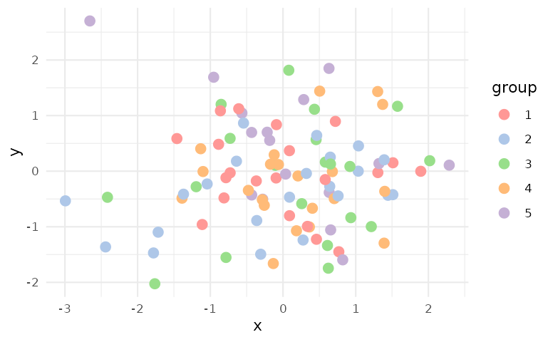

What if my data has more categories than the number of colors offered?
Although it is recommended that we do not encode too many categories in different colors, in practice, one can still create an “adaptive” color palette based on the existing discrete color palettes in ggsci.
See this blog post for a detailed guide on creating adaptive ggplot2 color scales with color interpolation.
Use a color scale consistently for multiple plots in a document
To apply a color scale for all plots in a document and avoid
repetition, a simple solution is setting the two global options
ggplot2.discrete.colour and
ggplot2.discrete.fill. For example:
library("ggplot2")
p <- ggplot(mpg, aes(displ, hwy, colour = factor(cyl), fill = factor(cyl))) +
geom_point() +
geom_smooth(method = "lm") +
theme_bw()
p
# Set global options
options(
ggplot2.discrete.colour = ggsci::scale_colour_d3,
ggplot2.discrete.fill = ggsci::scale_fill_d3
)
p
# Restore original options after use
options(
ggplot2.discrete.colour = NULL,
ggplot2.discrete.fill = NULL
)
pCustomize color ordering in a palette
You can customize the color selection and ordering of any discrete color palette in ggsci by using the following function that returns a custom color scale function. This method is flexible and encourages code reuse.
#' Define a custom color scale
#'
#' @param pal Name of the color palette, as part of the
#' original palette function name.
#' @param palette Palette type, as defined in the
#' original palette function (optional).
#' @param n Number of (first) colors to fetch from the original palette.
#' @param order A vector of color index (optional).
#' @param alpha Transparency level.
#'
#' @return A custom color scale function.
scale_color_custom <- function(pal, palette, n, order, alpha = 1) {
pal <- getFromNamespace(paste0("pal_", pal), "ggsci")
colors <- if (missing(palette)) {
pal(alpha = alpha)(n)
} else {
pal(palette = palette, alpha = alpha)(n)
}
if (length(order) > length(colors)) {
stop("The length of order exceeds the number of colors.", call. = FALSE)
}
colors <- if (!missing(order)) colors[order]
ggplot2::scale_color_manual(values = colors)
}Use scale_color_custom() in an example:
library(ggplot2)
library(ggsci)
set.seed(42)
df <- data.frame(
x = rnorm(100),
y = rnorm(100),
group = factor(sample(1:5, 100, replace = TRUE))
)
p <- ggplot(df, aes(x = x, y = y, color = group)) +
geom_point(size = 3) +
theme_minimal()
p + scale_color_custom("d3", palette = "category20", n = 20, order = c(14, 11, 13, 12, 15))